Crie uma rede virtual na nuvem
1. No Oracle Cloud, acesse o Compute Service Console. Vá para Rede >
Redes virtuais em nuvem.
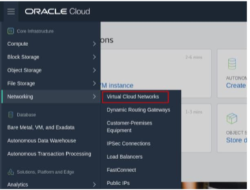
2. Clique em Criar rede virtual na nuvem.
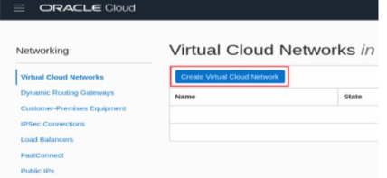
3. Insira o nome da VCN, o nome do compartimento no qual a VCN será
criado e o bloco CIDR (ex: 10.0.0.0/16). Selecione Usar nome do host neste
VCN e, em seguida, clique no botão Create Virtual Cloud Network.
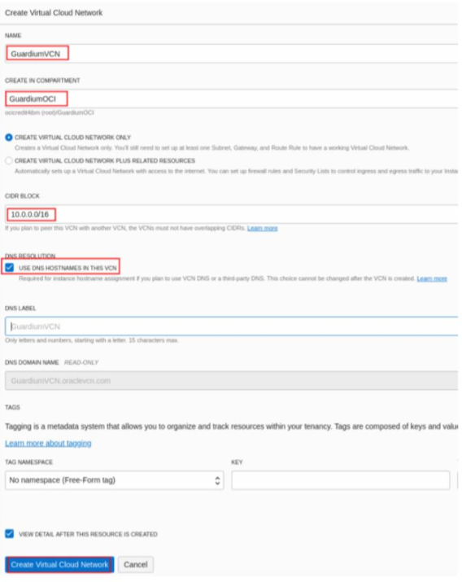
4. Clique em Criar sub-rede.
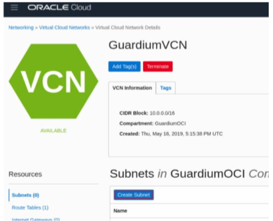
5. Digite o nome da sub-rede e o bloco CIDR. Selecione Tabela de rota padrão e
Lista de segurança padrão. Clique em Criar sub-rede.
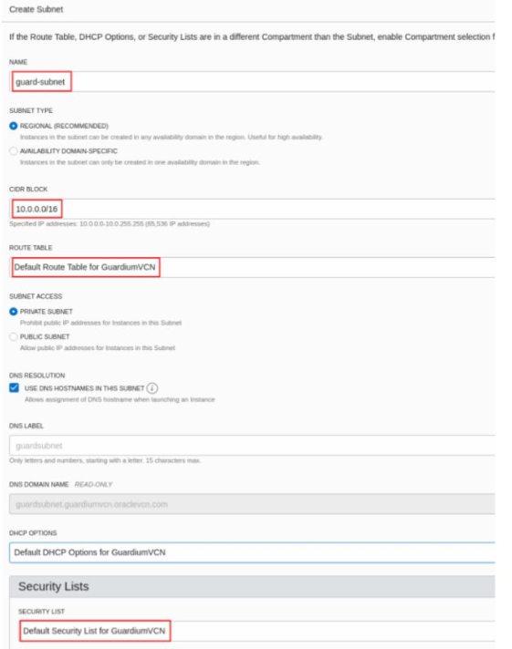
6. Modifique as regras de segurança padrão e abra as portas necessárias para o Guardium.
a. Clique no link Lista de segurança e, em seguida, clique em Lista de segurança padrão.
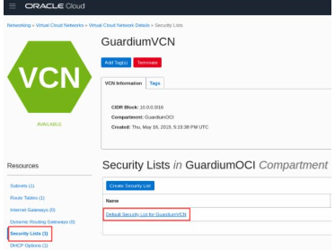
b. Clique em Incluir Regras de Entrada.
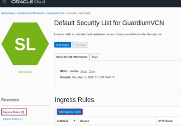
c. Adicione regras de entrada para as portas 22,3306,8081, 8443-8445,8447 e 16016-
16021.
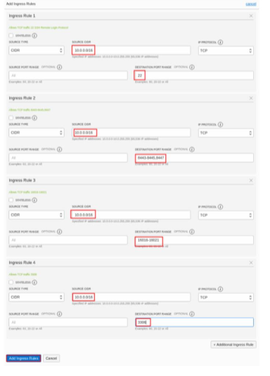
d. Adicionar regra de saída Permitir todo o tráfego.
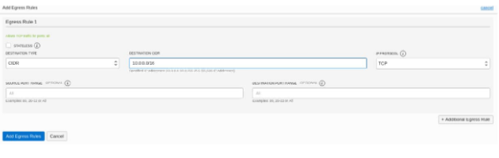
- Iniciar Instância
Navegue até o Oracle OCI Marketplace e procure por Guardium. Selecione os
Versão do Guardium (ex: 10.6), digite Collector ou Aggregator. Selecione o OCI
Compartimento no qual a instância será criada e, em seguida, clique em Iniciar instância.
1. Digite o nome da instância e selecione a forma da instância. guardium
recomenda Compute Shapes com pelo menos 8 vCPUs e 32 GB de RAM.
Formas de computação: VM.Standard2.4, VM.Standard2.8, VM.Standard2.16,
VM.Standard2.24, VM.Standard.E2.4, VM.Standard.E2.8, VM.DenseIO2.8,
VM.DenseIO2.16, VM.DenseIO2.24
2. Escolha a chave pública SSH usada para conectar-se à instância.
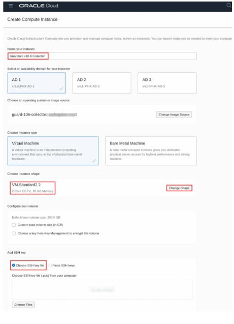
3. Configure a rede. Selecione a VCN e a sub-rede criadas na etapa anterior.
Em seguida, clique em Criar.
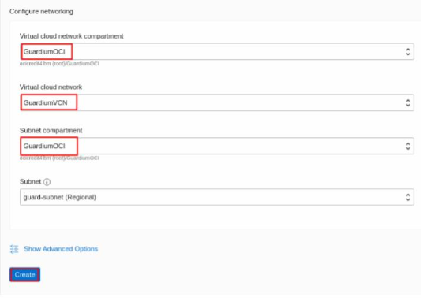
4. Assim que a implantação estiver pronta, o status deve ser atualizado para “Executando”.
- Conexão com a instância
1. Conecte-se à GUI do Guardium: Em um navegador, acesse a URL: https://